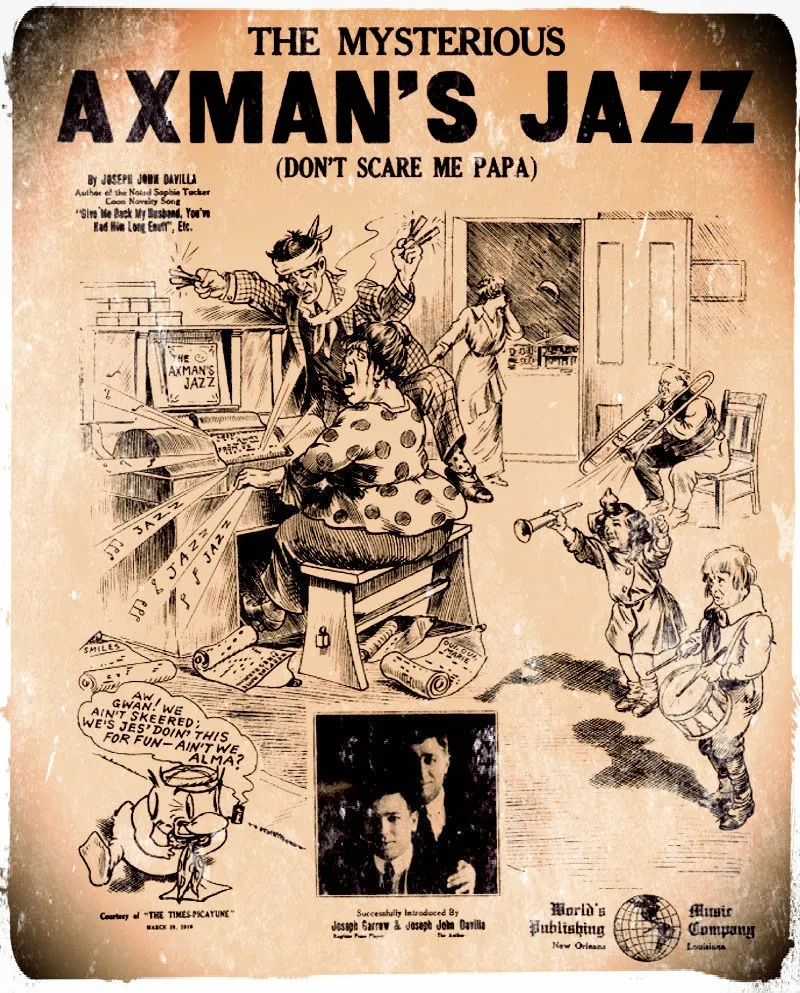

Nueva Orleans, ciudad de Luisiana (Estados Unidos) junto al río Misisipi, es famosa por muchas cosas: el jazz, el carnaval de Mardi Gras, el vudú o el destructivo paso del huracán Katrina en 2005.
La confluencia de españoles, ingleses y franceses, y el desarrollo de su propia cultura criolla han dado a Nueva Orleans un poso cultural que del que pocas ciudades en Estados Unidos pueden presumir. Esto tiene aspectos positivos, pero también muchos negativos: la sombra del infame Jack el Destripador, que actuó en Londres a finales del siglo XIX, es alargada, y Nueva Orleans también tuvo que sufrir a un asesino en serie que dejó su impronta en la ciudad.

Al ser un caso sin resolver, el asesino de Nueva Orleans no tiene una identidad. Al contrario que Jack el Destripador, las víctimas del hachero no eran prostitutas, sino mayormente inmigrantes italianos, aunque parecía tener una predilección por atacar a mujeres y los hombres solían ser daños colaterales. Solía colarse en las casas de sus víctimas por la noche cuando estos dormían, y atacarlos en sus camas con un hacha o un objeto cortante que, curiosamente, solía pertenecer a las víctimas. En todos sus ataques, el arma empleada fue abandonada en casa de la víctima, y el robo se descartó rápidamente porque el hachero nunca se llevó nada consigo. Se pensó que podía tratarse de crímenes de naturaleza sexual o incluso de mafias italianas, pero sus motivos nunca quedaron claros.
Mapa de los ataques del hachero publicado en 1919. Fuente: Wikimedia Commons.
Victimas: Joseph y Catherine Maggio.
Entre Mayo de 1918 y Octubre de 1919, varios crímenes violentos ocurrieron en el interior de las viviendas de algunos vecinos de la ciudad de Nueva Orleans, perpetrados por un mordaz asesino al que la prensa bautizó como
“el Hombre del Hacha”.
22 de Mayo de 1918, residencia de los Maggio. El matrimonio compuesto por Joseph y Catherine Maggio descansa en su dormitorio, una de las habitaciones que forman parte de ese edificio, que, a la vez de vivienda, cumple las funciones de tienda de comestibles y bar. En algún momento de la noche, un intruso accede a la casa, empuñando una navaja de afeitar y un hacha que pertenece al propio Joseph. Este recibe un primer golpe en la cabeza, asestado con el arma, para a continuación ser degollado como su esposa. La hoja del hacha continuó su trabajo, destrozando el cráneo de ambos. Se dice que los degolló con tanta fuerza que Catherine por poco no fue decapitada.
Dos horas más tarde, los hermanos de Joseph, Jake y Andrew, que viven en el mismo edificio, acceden al dormitorio de la pareja al no saber de ellos y escuchar ruidos extraños. Es entonces cuando descubren los cuerpos del matrimonio Maggio, la mujer con un corte tan profundo mientras que el hombre, sorprendentemente, a pesar de las graves heridas, permanece con vida. Sin embargo murió a los pocos minutos.
La policía investigó el escenario, que no mostraba signos de robo. Hallaron en el cuarto de baño las prendas ensangrentadas del asesino, que debió limpiarse y mudarse de ropa tras el crimen, y el hacha empleada. En el exterior, se encontró un escrito hecho con tiza en una pared que decía:
“Señora Maggio se sentará esta noche al igual que la señora Toney”.
En el césped de la casa vecina, se encontraba la navaja con las que le habían cortado el cuello.
Andrew Maggio fue detenido como sospechoso porque la navaja había sido de su propiedad, según Esteban Torre, un empleado de este que trabajaba en la barbería de su propiedad que tenía en Camp Street. Al parecer, un par de días antes había decidido deshacerse de esta porque tenía la cuchilla defectuosa. Además, la policía encontró extraño que, estando en un momento de crimen, no hubiera escuchado nada, a lo que él respondió que venía borracho tras una celebración, ya que al día siguiente se iba a enrolar en la Armada. Fue absuelto.
Víctimas: Louis Besumer y Harriet Lowe.
Un mes más tarde, el 27 de Junio, el asesino volvió a actuar. En esta ocasión, en la tienda de comestibles del polaco Louis Besumer. De madrugada, mientras dormía con su amante, Harriet Lowe, en una de las habitaciones traseras, fue asaltado por un hombre que se había apoderado de su hacha. Recibió un fuerte golpe en la sien derecha, mientras que ella un golpe en la oreja izquierda que le paralizó el rostro.
A eso de las siete de la mañana, llegó el reparto del pan de Johan Zanca, que, al no encontrar ninguna puerta abierta, forzó una para poder entrar. En el interior, inconscientes, con las caras bañadas en sangre, yacía la pareja, que fue trasladada al hospital. Como en el caso anterior, el hacha se encontró en el baño, y el intruso que los había agredido había accedido a través de un panel extraído a la puerta trasera.
En esta ocasión, el detenido como sospechoso fue un antiguo empleado de Besumer, el afroamericano de cuarenta y un años, Lewis Oubicon, reforzado por una mala coartada y por la acusación de la mujer, que dijo que un mulato los había atacado, pero fue absuelto al no encontrar pruebas contra él.
Investigando la vivienda se encontró una serie de correspondencia en alemán, yiddish y ruso perteneciente a Besumer, lo que hizo que las autoridades lo vigilaran de cerca al considerarlo un posible espía alemán. Además, fue detenido en agosto de 1918, al ser inculpado del ataque por Harriet, quien moriría en el Hospital de la Caridad el día 5 de ese mes por producirse un fallo durante la intervención quirúrgica para reconstruirle el rostro.
Besumer pasó nueve meses en prisión, hasta ser absuelto el uno de mayo de 1918.
Víctima: Anna Schneider.
El mismo día en el que fallecía Harriet Lowe, otro ataque se producía en Emira Street. Pasada la medianoche, Edward Schneider llegaba a casa del trabajo. Al entrar al dormitorio, quedó paralizado: su esposa, Anna Schneider, de 28 años, y embarazada de 8 meses, permanecía sobre la cama ensangrentada, con una parte del cuero cabelludo arrancado y varios golpes en la cabeza.
Al recuperar la consciencia, ya en el hospital, indicó que no recordaba gran cosa, excepto una figura alta y oscura que estaba de pie sobre la cama y que fue la que la golpeó. Pero a diferencia de casos anteriores, utilizó como herramienta del crimen una lámpara.
Dos días más tarde, dio a luz a una niña totalmente sana, y, como sospechoso, se detuvo a un ex convicto de nombre James Gleason.
Sus últimas apariciones:
Steve Boca
El tendero Steve Boca se despertó el 10 de agosto de 1919 en la cama, viendo a un hombre de pie sobre esta, justo segundos antes de recibir un golpe de hacha en la cabeza. Al volver en sí, sangrando salió a la calle hasta llegar a casa de un vecino, Frank Genusa, en donde se desmayó.
Sarah Laumann
Casi un mes más tarde, el 3 de septiembre, Sarah Laumann, una joven de diecinueve años, fue hallada por sus vecinos en la cama, con un golpe en la cabeza y faltándole varios dientes. El agresor había accedido a la casa por una ventana abierta, y el hacha se dejó en el jardín delantero.
Mike Pipetone
La última víctima, en este caso mortal, fue Mike Pipetone, el veintisiete de octubre. Fue su esposa, Esther Albano, quien lo encontró en el dormitorio, al escuchar unos ruidos en el interior. Allí se encontró a un hombre de gran tamaño golpeando a su marido con el hacha, la cual le había provocado heridas muy graves y dejó grandes chorretones de sangre por paredes y techo. Este huyó.
La carta del asesino
La única prueba de la existencia del hombre, además de los asesinatos, es la misteriosa carta que publicó en varios periódicos de la región en donde indicaba una procedencia para-humana y su amor por la música. La carta, sin lugar a dudas, resulta un tanto extraña, casi surreal, en medio del terror que caracterizaba estos aciagos días para los habitantes de la región. Curiosamente, el criminal no fue el único en enviar cartas: varios habitantes hacían lo mismo y lo invitaban a entrar –si se atrevía, claro – a sus propiedades.
Así decía la carta del asesino:
Infierno, Marzo 13, 1919
Estimado Mortal:
Nunca me han atrapado, y nunca lo harán. Nunca me han visto, pues soy invisible, tanto como el éter que rodea su tierra. No soy un ser humano, sino un espíritu y un demonio del ardiente infierno. Soy lo que ustedes, gente de Orleans, y su estúpida policía, llaman el Hombre del Hacha.
Cuando llegue el momento, vendré a clamar nuevas víctimas. Solo yo sé quiénes serán. No dejaré pistas más allá de mi hacha sangrienta, chorreante de la sangre y los cerebros de aquel a quien habré enviado al infierno, para que me haga compañía.
Si deseas, puedes decirle a la policía que tenga cuidado de enfrentarme. Por supuesto, soy un espíritu razonable. No me ofende la manera en que han realizado sus investigaciones en el pasado. De hecho, han sido tan impensablemente estúpidos que no me han hecho reír solo a mí, sino a Su Satánica Majestad, Francis Joseph, etc. Pero díganles que tengan cuidado. No les permitan tratar de descubrir qué soy, pues sería mejor para ellos no haber nacido que desatar mi ira. No creo que haya necesidad de tal advertencia, pues estoy seguro de que la policía siempre me evitará, como lo han hecho en el pasado. Son lo suficientemente inteligentes para saber cómo mantenerse libres de todo mal.
Sin duda alguna, ustedes, gente de Orleáns, piensan que soy el peor asesino… y lo soy, pero podría ser mucho peor si así lo deseara. Si quisiera, podría visitar su ciudad cada noche. A mi voluntad podría masacrar miles de sus mejores ciudadanos, pues tengo una amistad cercana con el Ángel de la Muerte.
Ahora, para ser exactos, a las 12:15 (hora de la tierra) del próximo martes en la noche, pasaré sobre Nueva Orleáns. En mi infinita misericordia, les haré una pequeña proposición. Aquí está:
Soy un fanático del Jazz, y juro por todos los demonios en las regiones interiores que cualquier persona en cuya casa una banda de Jazz esté tocando a todo volumen (a la hora que ya he mencionado) será perdonada. Si todos tienen una banda de Jazz tocando, pues, bien, mucho mejor para ustedes. Una cosa es segura y es que algunos de los que se atrevan a no escuchar esta música en la noche del martes (en caso de que alguien se atreva) probarán mi hacha.
Bueno, dado que tengo frío, y extraño el cálido ambiente de mi nativo Tártaro, creo que es hora de que deje esta tierra. Cesaré mi discurso en la esperanza de que publiquen esto, y de que la noticia le caiga bien a su gente. He sido, soy y seré el peor espíritu que jamás ha existido, tanto en la realidad como en los reinos de la fantasía.
Firmado: El Hombre del Hacha
Nadie sabe la procedencia de este asesino. Algunos incluso afirman que se trató de un verdadero espíritu, otros hablan de un fanático del Jazz dispuesto a llevar al extremo su obsesión. En todo caso, aquella noche miles de hogares contrataron bandas o improvisaron fiestas con tal de evitar el designio, y aquellos que no podían hacerlo llevaron a toda su familia a los salones de baile. Nunca vio aquella región una noche de Jazz como aquel martes de marzo de 1919.
¿Qué opinas? ¿Espíritu, asesino, fanático? ¿O sólo un hombre obsesionado con el Jazz?